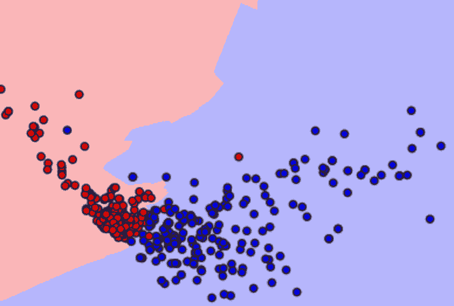

Experience

Paris
2024 -
ML Engineer
Built a production RAG platform (5 microservices, 13 containers) used daily by 150 employees. Earned top-rated instructor status delivering GenAI and MLOps masterclasses to enterprise teams. Led junior teams on document extraction and multimodal ML projects.
Saint-Etienne
2021 -
2025
2025

Ecole des Mines
MEng in Computer Science and Microelectronics at one of France's top 10 engineering schools. Coursework in Machine Learning, Deep Learning, C/C++, and Software Architecture.

New Zealand
2023 -
2024
2024
University of Auckland
Certificate in Computer Science and Software Engineering at a top-100 global university (QS). Focus on Machine Learning, Software Architecture, OOP, and Database Systems.
Vincent Lalanne. 2026.